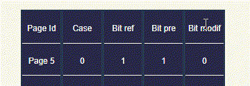
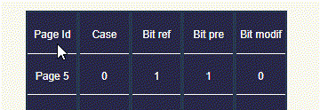

Multiprogrammation
Dans les parties partition fixe et variable la demande d'allocation de la mémoire centrale par l'utilisateur se fait de la même manière que celle définie précedemment (Partie Monoprogrammation).
Dans la méthode partition variable de la mémoire centrale en utilisant des files d'attentes, notre application permet à l'utilisateur d'afficher la file d'attente des processus ou la faire disparaitre, ceci avec un simple clic :
Sur un bloc mémoire de taille donnée s'il s'agit de la méthode qui utilise une file pour chaque bloc mémoire.
Ou bien sur le bouton "File" s'il s'agit de la méthode qui utilise une seule file.
Pagination
C'est un espace réservé aux algorithmes, il donne notamment à l’utilisateur l’opportunité de lire l’algorithme de la méthode choisi, avec la possibilité d’afficher ou cacher cet espace avec un simple clic sur le bouton juste au-dessus (On trouve la même fonctionnalité dans la partie traduction d'adresse).
Cet espace est dédier à l’ajout d’un nouveau processus dans la mémoire secondaire, le nom du processus est entré dans le champ «Process id» et le nombre de pages est entré dans le champ «Nombre de Pages», et ça après avoir sélectionner une des 5 méthodes de remplacement disponibles dans notre application, puis appuyer sur la touche "Entrée".
En cliquant sur un processus parmi ceux de la mémoire secondaire, il apparait son tableau de pages.
En cliquant sur le bouton «Bit modif» d'une page quelconque, on pourra ainsi modifier son bit de modification.

En cliquant sur une page quelconque, on peut visualiser le déroulement des différentes étapes et instructions de l’algorithme de remplacement choisi.
